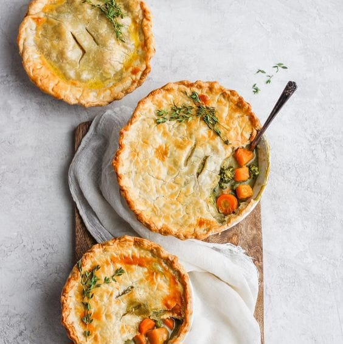

Ingredientes:

12 colheres de farinha de trigo;
1 copo de óleo;
3 ovos inteiros;
sal a gosto;
2 copos de leite;
1 colher de fermento;
100g de mussarela ralada (opcional);
recheio a gosto (ex.: frango, sardinha, etc...).
Modo de Preparo:

Bata os ingredientes no liquidificador.
Depois coloque a metade da massa
em uma forma untada e coloque o recheio.
Depois coloque o resto da massa.
Leve para assar até ficar dourado.